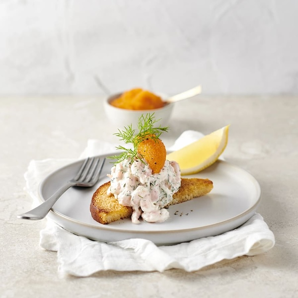

Toast Skagen

A Swedish Starter of Toasted Bread with Prawn Salad
Recipe by ICA
Ingredients
- 300 grams shrimp
- 1 pot of dill
- 1 1/2 dl mayonnaise
- 1 lemon
- Salt and black pepper
- 3 slices toast
- 2 tablespoons butter
- 80 grams bleak roe
Steps
- Chop dill and mix with mayonnaise
- Add juice from 1/2 lemon, salt and pepper
- Add shrimp
- Slice toast in halves and fry in butter until golden
- Add Skagenröra to the toast halves and top with bleak roe and dill
- Serve with lemon wedges